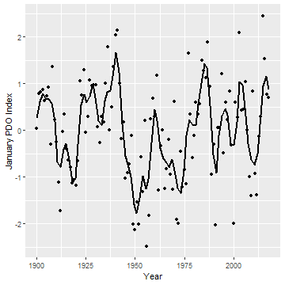

rpdo has been superseded by the rsoi package which includes the historical and most recent monthly PDO index values together with related climate indices.
rpdo is an R data package of monthly Pacific Decadal Oscillation (PDO) index values from January 1900 to September 2018.
The function pdo_download() scrapes the data from the no longer updated http://research.jisao.washington.edu/pdo/PDO.latest.
Demonstration
library(rpdo) #> rpdo has been superseded by rsoi library(ggplot2) data <- rpdo::pdo data <- subset(data, data$Month == 1) ggplot(data = data, aes(x = Year, y = PDO)) + geom_smooth(span = 0.1, se = FALSE, color = "black", method = "loess") + geom_point() + ylab("January PDO Index") #> `geom_smooth()` using formula 'y ~ x'

Installation
To install the latest release from CRAN
install.packages("rpdo")
To install the developmental version from GitHub
# install.packages("remotes") remotes::install_github("poissonconsulting/rpdo")
Information
For more information see http://research.jisao.washington.edu/pdo/PDO.latest.
Code of Conduct
Please note that the rpdo project is released with a Contributor Code of Conduct. By contributing to this project, you agree to abide by its terms.